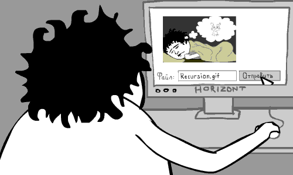

Как работает рекурсия? Наглядный пример в gif-изображении:
Функция нахождения факториала числа
def factorial(n):
if n <= 1: # Условие для прекращения рекурсии
return 1
else:
return n * factorial(n - 1) # Прямая рекурсия
Для реализации рекурсия вычислительная техника формирует рекурсивный стек. Это область оперативной памяти, куда записывается вся текущая информация для обеспечения работы рекурсивных вычислений. Туда пишутся параметры, все локальные переменные, резервируется место для всех результатов, адрес возврата.
| a = 5 | fact = | Адрес возврата |
В конечном итоге рекурсивный стек будет уничтожен.
Процесс выполнения рекурсивной подпрограммы до момента попадания на нерекурсивную ветвь называется прямой ход рекурсии, а после попадания на нерекурсивную ветвь – обратный ход рекурсии.